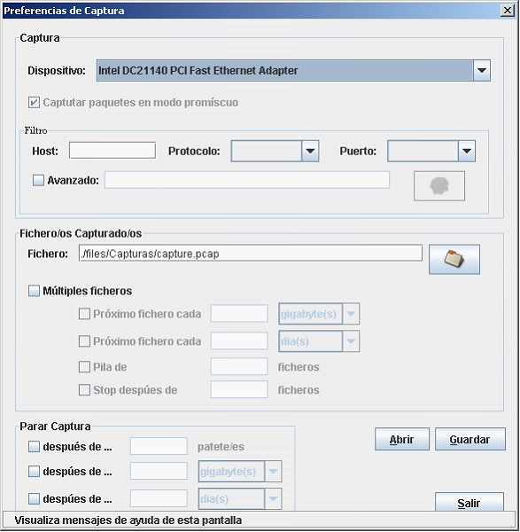
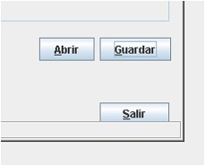
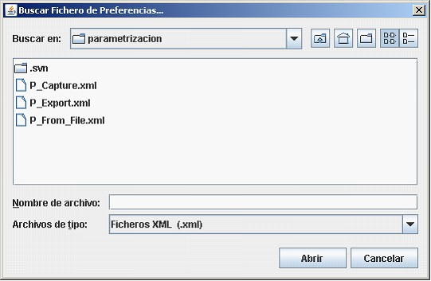

Parametrizacion de las capturas desde Adaptador de red
Opción similar a las reseñadas anteriormente de captura desde adaptador de red y captura desde fichero con la diferencia de que no invoca a la función de captura.
Está diseñada para generar un fichero de configuración que posteriormente pueda ser reutilizado en las capturas en modo gráfico, pero sobre todo en las capturas en modo comando. Es en esta segunda opción donde esta opción resulta de más ayuda.
La ventana que aparece al pulsar sobre la opción de captura es la que sigue:

Como se observa es muy similar a las anteriores documentadas anteriormente.
El aspecto diferenciador se encuentra en las opciones situadas en la parte inferior izquierda de la ventana.

Las cuales permiten:

Copyright © 2010, <Carlos Mardones Muga>
Created with the Freeware Edition of HelpNDoc: Full featured Help generator